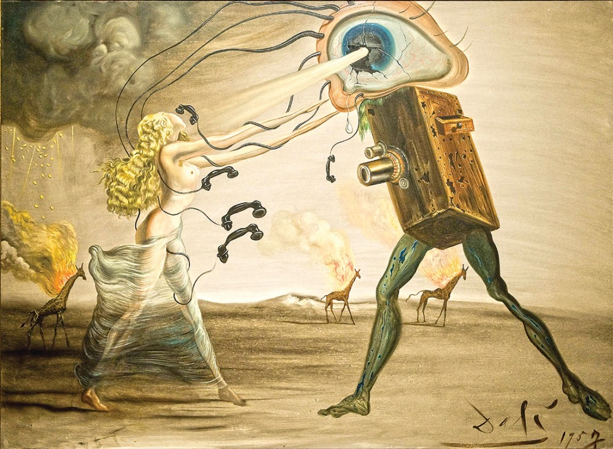

Под живописью подразумевается вид изобразительного искусства, который заключается в создании картин, наиболее подобно и полно отображающих действительность. Живопись – это произведение искусства, выполненное нанесенными на твердую поверхность красками. Живопись может передавать на плоском полотне пространство и объем, раскрывать сложную гамму человеческих чувств, воплощать какие-либо идеи.
Цвет в живописи является основным средством выражения ассоциаций, эмоций и чувств. Нужный цвет живописец составляет на палитре, создавая затем на полотне колорит — цветовой порядок, который, в зависимости от сочетаний цвета, бывает холодным или теплым, мажорным или минорным, напряженным или расслабляющим, ярким или затемненным, выражая общее настроение картины.
Живопись подразделяется на виды, каждый из которых имеет свою специфику решения художественных задач и исполнения. Это декоративная роспись, театрально-декорационная живопись, миниатюра, иконопись.
Живописный подход, как правило, широко используется и в других видах изобразительного искусства – скульптуре, графике, рисунке.
Множество событий и объектов в окружающем мире, а также внимание к ним живописцев, послужили причиной возникновения множества живописных жанров. Это пейзаж, портрет, натюрморт, а также бытовой, батальный, исторический, анималистический, мифологический жанры. Зачастую в картинах художников органично сочетаются несколько жанров, например, исторический или мифологический жанр могут успешно дополнять портрет.
Живопись бывает монументальной и станковой. Холст для картины может быть установлен на мольберт и натянут на подрамник, что и называется станком. Монументальная же живопись представляет собой большие произведения на стенах, потолках, опорах зданий, такие картины невозможно отделить от их основы. Зачастую амии таких произведений являются значительные, эпохальные события в истории человечества, либо мифологические, религиозные мотивы. С монументальной живописью тесно переплетаются витраж и мозаика, которые относятся к декоративному искусству.
По методу технического исполнения и используемым для этого материалам живопись подразделяется на темперную, масляную, эмаль, восковую, клеевую, водными красками по штукатурке (т.е. фреска). В ряде случаев бывает сложно разделить графику и живопись, так как работы, выполненные с помощью пастели, гуаши, акварели, могут относиться к обоим видам искусства.